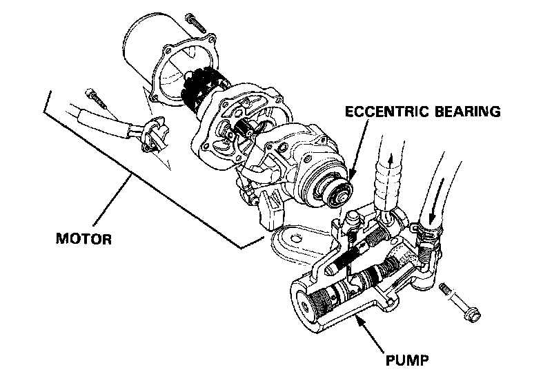
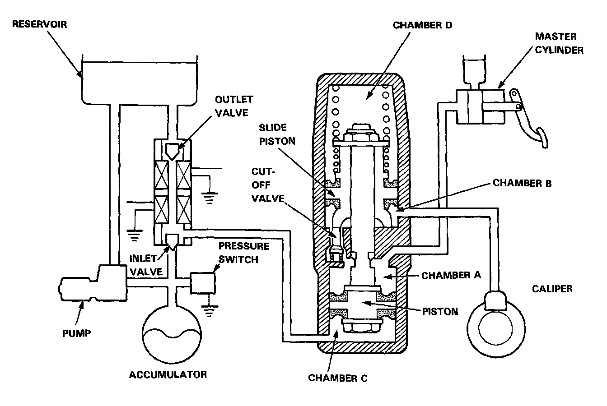
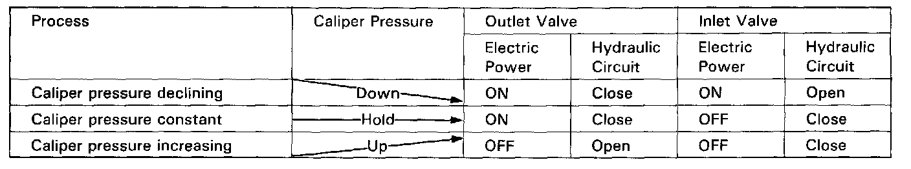

Brake Fluid Pump: Description and Operation

The power unit consists of a motor and a plunger-type pump. This unit transmits the revolution of the motor to the plunger by way of an eccentric bearing and supplies high-pressure brake fluid to the accumulator by the effect of the reciprocating movement of the plunger.
When the pressure in the accumulator drops below the prescribed pressure level, the pressure switch gives an Off signal. The ABS control unit turns the motor relay ON to start the operation of the pump, upon the reception of this signal and a signal from the wheel sensor that the vehicle is running at a speed greater than 6 mph (10 km/h). When the pressure in the accumulator attains the prescribed pressure, the ABS control unit turns the motor relay OFF approximately three seconds after the unit receives an ON-signal from the pressure switch. By this, the high-pressure in the accumulator is maintained.
The ABS control unit turns the pump off and lights the system indicator light if the accumulator pressure does not reach the prescribed level after the pump has run continuously for 120 seconds.

In ordinary brake operations, the cut-off out valve in the modulator is open to transmit the hydraulic pressure from the master cylinder to the brake calipers via the chamber A and the chamber B.
The chamber C is connected to the reservoir through the outlet valve which is normally open. It is also connected to the hydraulic pressure source (pump, accumulator, pressure switch, etc.l via the inlet valve which is normally closed. The chamber D serves as an air chamber. Under these conditions, the pressures of the chambers C and D are maintained at about the atmospheric pressure, permitting regular braking operations.

If brake inputs (force exerted on brake pedal) are excessively large and a possibility of wheel locking occurs, the control unit operates the solenoid valve, closing the outlet valve and opening the inlet valve. As a result, the high pressure is directed into chamber C, the piston is pushed upward, causing the slide piston to move upward and the cut-off valve to close.
As the cut-off valve closes, the flow from the master cylinder to the caliper is interrupted, the volume of chamber B, which is connected to the caliper, increases, and the fluid pressure in the caliper declines.
When both of the two valves, inlet and outlet, are closed (when only the outlet valve is activated) the pressure in the caliper is maintained constant.
When the possibility of wheel locking ceases, it is necessary to restore the pressure in the caliper. The solenoid valve is therefore turned off (outlet valve: open, inlet valve closed).
Slide Piston Function
When the car is used on rough roads where the tires sometimes lose adhesion, the anti-lock brake system may function excessively, causing an excessively large volume of brake fluid to flow into the chamber C. As this occurs, the piston is moved excessively, resulting in an abnormal loss of pressure in the chamber B. In order to overcome this problem, the slide piston is kept in the proper position by the spring force to avoid a negative pressure in the chamber B.
Kickback
When anti-lock brake system is functioning, the piston moves upward, the volume of chamber B increases, and the fluid pressure on the caliper side is reduced. At the same time, the volume of chamber A is reduced and the brake fluid is returned to the master cylinder. When the brake fluid is pushed back to the master cylinder, the driver can feel the functioning of the anti-lock brake system because the brake pedal is kicked back.